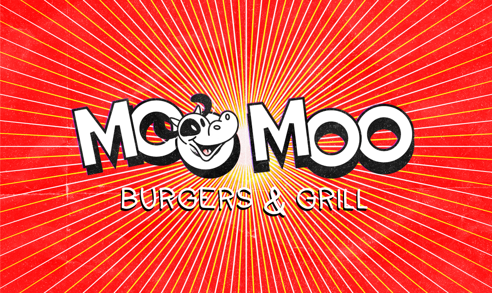
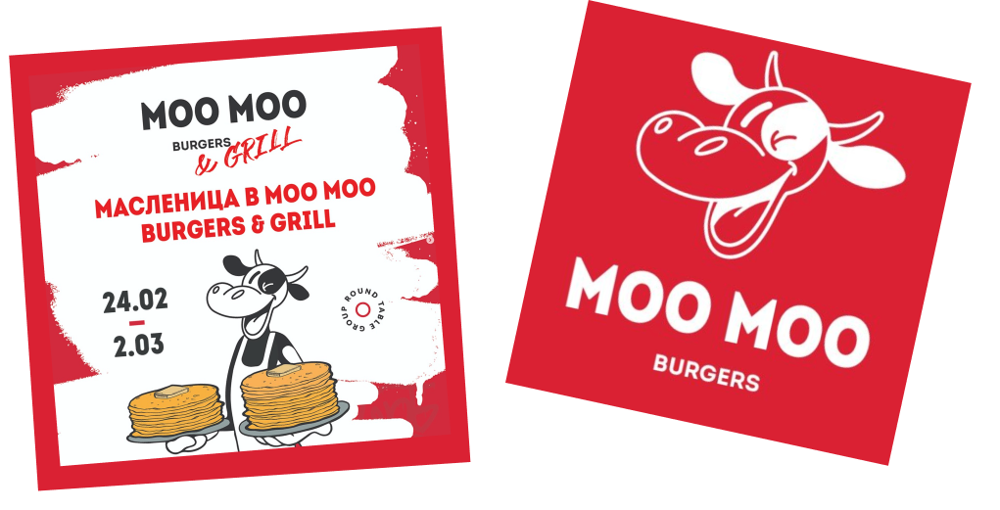
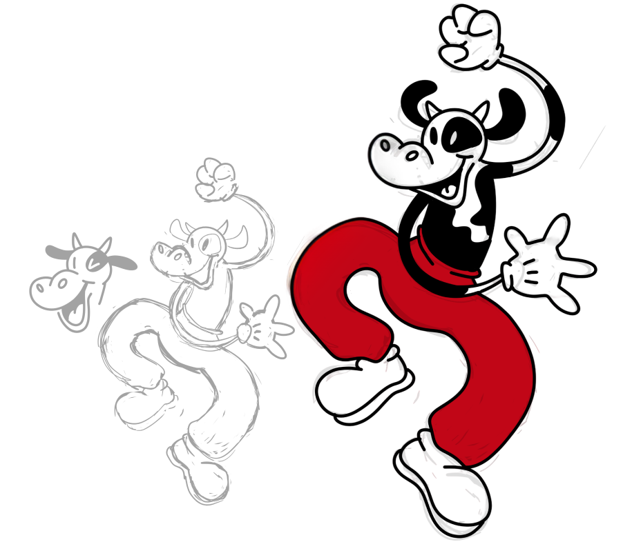
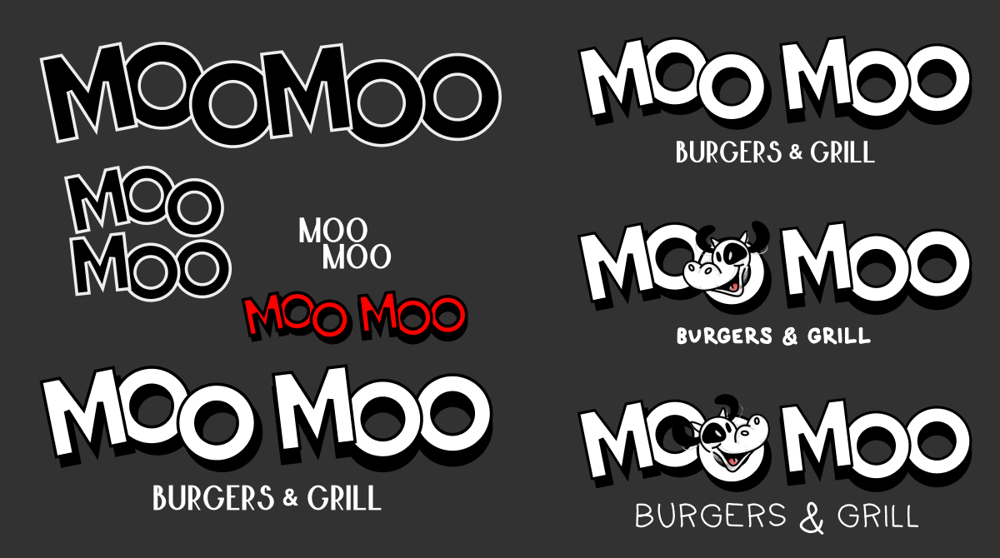
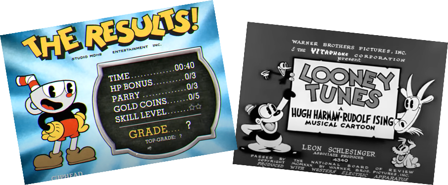
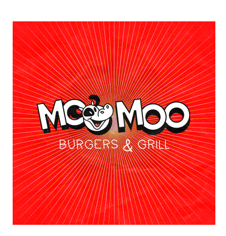
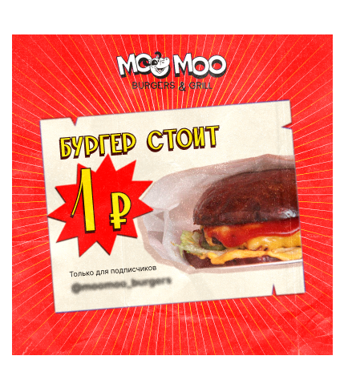
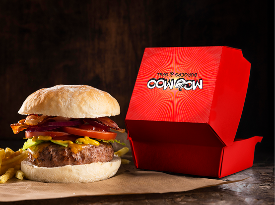
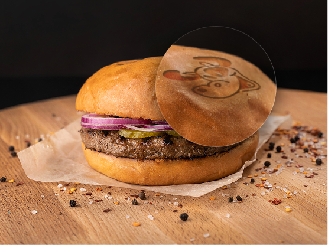
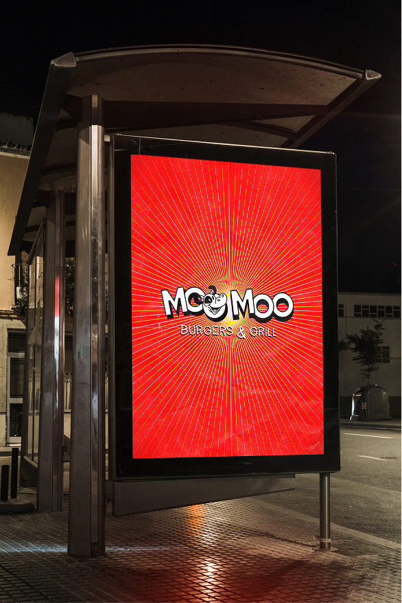

Ребрендинг для ресторана
Новый логотип, маскот и элементы оформления

У ресторана уже было мультяшное оформление и хотела это докрутить

Начала с маскота — сделала его более пластичным

Потом поменяла шрифты и композицию в логотипе

Я опиралась на стиль анимации 30х годов Я опиралась на стиль анимации 1930-х годов

Ещё подобрала новый оттенок красного, добавила лучи на фон и текстуру бумаги


Обновлённые коробки, клеймо для булочек и постер


